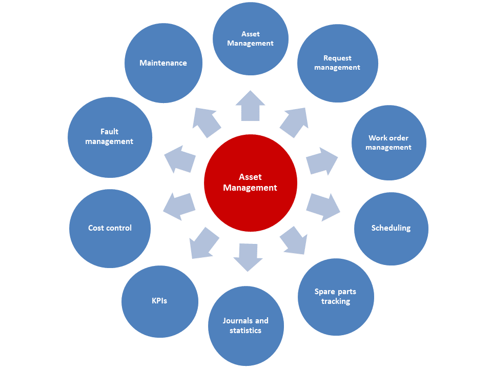

Funktionale Standorte und Anlagen
Important
Dynamics 365 for Finance and Operations hat sich zu speziell entwickelten Anwendungen entwickelt, mit denen Sie bestimmte Geschäftsfunktionen verwalten können. Weitere Informationen zu diesen Änderungen finden Sie im Dynamics 365-Lizenzierungshandbuch.
In diesem Thema werden funktionale Standorte und Anlagen in Asset Management beschrieben. Asset Management ist ein erweitertes Modul für die Verwaltung von Anlagen und Wartungsaufgaben in Dynamics 365 Supply Chain Management.
Übersicht
Anlagenmanagement ist nahtlos in mehrere Module in anderen Finance and Operations Apps integriert. Die folgende Abbildung zeigt die Schnittstellen mit anderen Modulen.
Mit Asset Management können Sie effizient alle Aufgaben verwalten und ausführen, die mit dem Verwalten und der Wartung von viele Arten von Ausrüstung in Ihrem Unternehmen zusammenhängen. Zu diesen Ausrüstungsgegenständen zählen Maschinen, Produktionsanlagen und Fahrzeuge. Asset Management unterstützt außerdem Lösungen über zahlreiche Branchen hinweg.
Die folgende Abbildung zeigt einen Überblick über die Hauptfunktionen von Asset Management.

Funktionale Standorte und Anlagen
Funktionale Standorte werden verwendet, um Anlagen an Standorten zu verwalten. Zu dieser Verwaltung gehört das Nachverfolgen von Anlagenkosten an funktionalen Standorten. Funktionale Standorte werden hierarchisch strukturiert, und Standorte können untergeordnete Standorte haben. Die Struktur funktionaler Standorte ist statisch. Dies bedeutet, das Standorte den Ort nicht ändern können. Anlagen können an funktionalen Standorten installiert sein und können bei Bedarf später an anderen funktionalen Standorten installiert werden.
Anlagenkosten folgen immer dem Standort der Anlage. Dies bedeutet Folgendes: Wenn Sie eine Anlage an einem neuen funktionalen Standort einrichten, verwendet die Anlage automatisch die Finanzdimensionen, die sich auf den neuen funktionalen Standort beziehen. Daher beziehen sich Anlagenkosten immer auf den funktionalen Standort, an dem die Anlage derzeit installiert ist. Diese automatische Handhabung von Finanzdimensionen gewährleistet die Nachverfolgung von Kosten beim Durchführen von Projekt-Controlling und -Reporting für funktionale Standorte.
Die Art, wie Sie die Hierarchie der funktionalen Standorte erstellen, hängt von den Unternehmensanforderungen für die Verwaltung der internen Ausrüstung oder die Wartung der Ausrüstung von Kunden ab. Die folgende Abbildung zeigt ein Beispiel für funktionale Standorte, die auf geografischen Standorten basieren.
Die folgende Abbildung zeigt ein Beispiel für funktionale Standorte, die auf Kunden basieren.